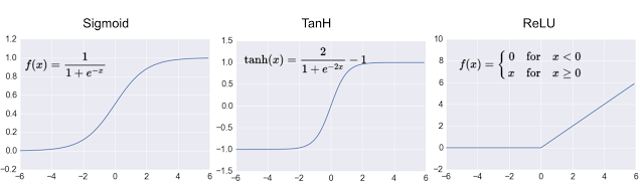

Tensorflow Keras
相關應用教學 圖像分類
Tensorflow Keras介紹
Keras是一個以tensorflow為背後引擎的模組讓我們可以快速建立一個影像辨識的資料來使用Tensorflow Keras介紹
y = activation function(x * w + b)x 是神經元的輸入值，y 是輸出，w 是權重(weight)，b 是偏差(bias)，一開始模型在建立時，w 跟 b 都是取 random 值，訓練的目的就是替每個神經元找到最事宜的 w 跟 bactivation function通常使用relu
Keras CNN模型
CNN主要架構分為 卷積層 池化層 平坦層 隱藏層 輸出層卷積層:將輸入的照片運用類似16種的濾鏡的效果將特徵取出池化層:將卷積層後的照片進行縮小平坦層:將照片的陣列展開成1維隱藏層:銜接平坦層神經輸出層:依據辨識種類數量設定卷積層跟池化層主要差異:卷積層就是增加照片數量大小不變 池化層就是大小改變照片數量不變
平坦層架構(分為1維)